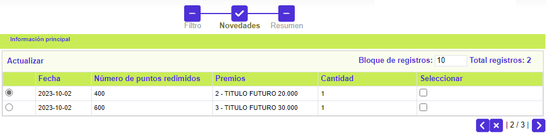
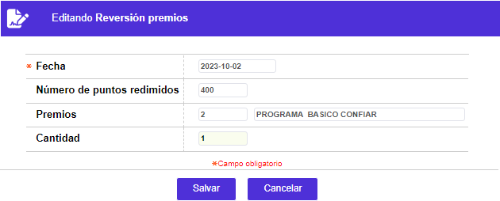
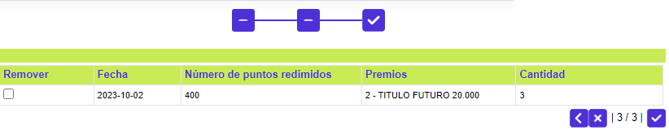

Reversión premios
Mediante esta función es posible revertir, únicamente, los puntos utilizados mediante la Redención premios, pues a pesar de desplegarse los distintos premios y millas, el sistema no permite la reversión de estas últimas. El formulario cuenta con un wizard de tres pasos a través del cual se realiza el proceso de reversión.
Filtro: En el primer paso del wizard, en el único campo, obligatorio y editable, Número de tarjeta, se debe ingresar el dato valido correspondiente, y mediante las teclas Tab o Intro, el sistema mostrará la información relacionada con esa tarjeta.

Novedades: En el segundo paso del wizard, si aplica, aparecen relacionan los datos de los premios que le han sido entregados al cliente, y al final de cada registro, se deben marcar o seleccionar, aquellos susceptibles de ser reversados. El sistema, al realizar la reversión de premios, tiene en cuenta el total de los puntos que fueron redimidos por ese premio.

Actualizar: Al invocar este enlace, el sistema permite modificar (reducir) la cantidad de unidades del premio a reversar, esto es efectuar reversiones parciales.

Resumen: Al llegar al tercer y último paso del wizard, si no se marca, en el checkbox Remover, alguno de los registros, al activar el botón checkmark (palomita, chulito o verificado), se finaliza el proceso de reversión de puntos.

Los puntos involucrados en cada reversión, le son reflejados al cliente en varios formularios del aplicativo, a saber: en el campo Devoluciones del formulario invocado mediante el enlace Puntajes de la Consulta centralizada de tarjeta, en los formularios Redención premios o Puntajes por tarjeta. De igual manera el campo Saldo inventario, en Premios puntaje, se incrementa en la misma cantidad aquí reversada.